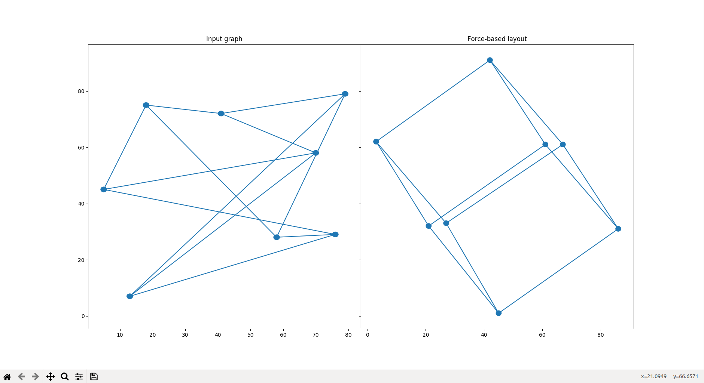
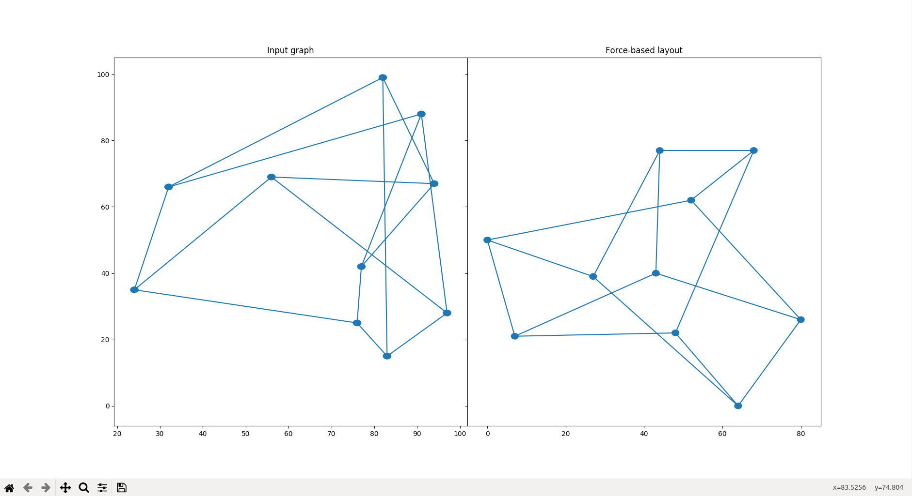
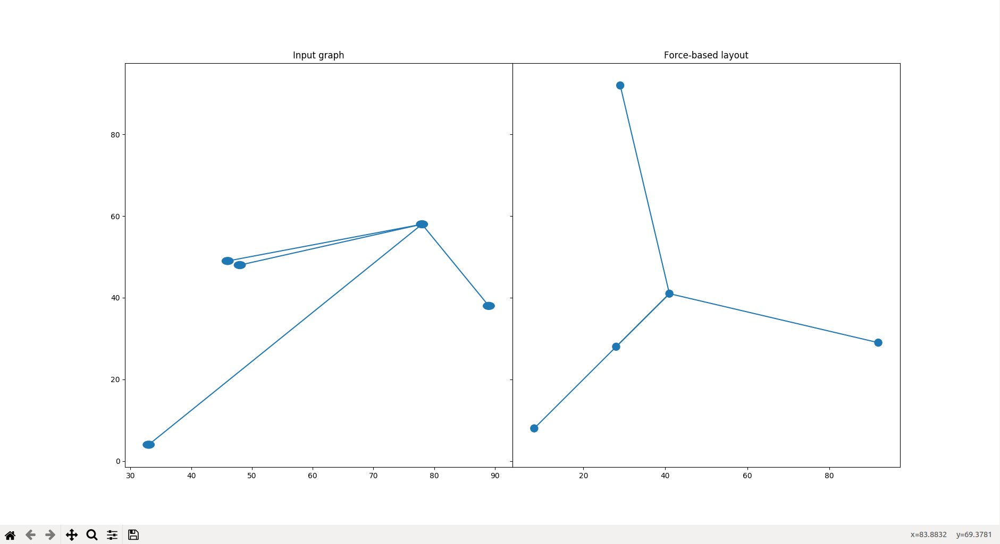

- 
- 
- 
EulerTikz is an implementation of graph drawing algorithms in Python3, with rendering in matplotlib. Currently, EulerTikz includes an implementation the force-based layout algorithm for simple connected undirected unlabelled graphs.
The dependencies include:
python3 main.py<number of vertices> <number of edges>
<vertex> <vertex>
.
.
.
<vertex> <vertex>
where each pair of vertex labels preceding the first line denotes an edge.
Force-based layout algorithm simulates the idea of a physical system of attractive spring forces along edges and repulsive forces caused due to the vertices. Given a simple undirected graph $G$, we first compute the Laplacian matrix $L$ of $G$. Then, we find two sufficiently large eigenvalues of $L$ and apply appropriate linear adjustments to their corresponding eigenvectors. We then repeatedly apply the spring forces to every pair of vertices, forces are stronger between adjacent vertices than between nonadjacent vertices.
Let $G$ be a simple undirected graph of order $n$ and size $m$. Construction of the Laplacian $L$ of $G$ requires $O(n)$ operations. Eigenvalues can be found in $O(n)$ operations. Finally, applying forces between every pair of vertices takes $O(n^{2})$ time per step. Hence, the total running time of computing the graph drawing function is $O(kn^{2})$, where $k$ is the number of times spring forces are applied between every pair of vertices.